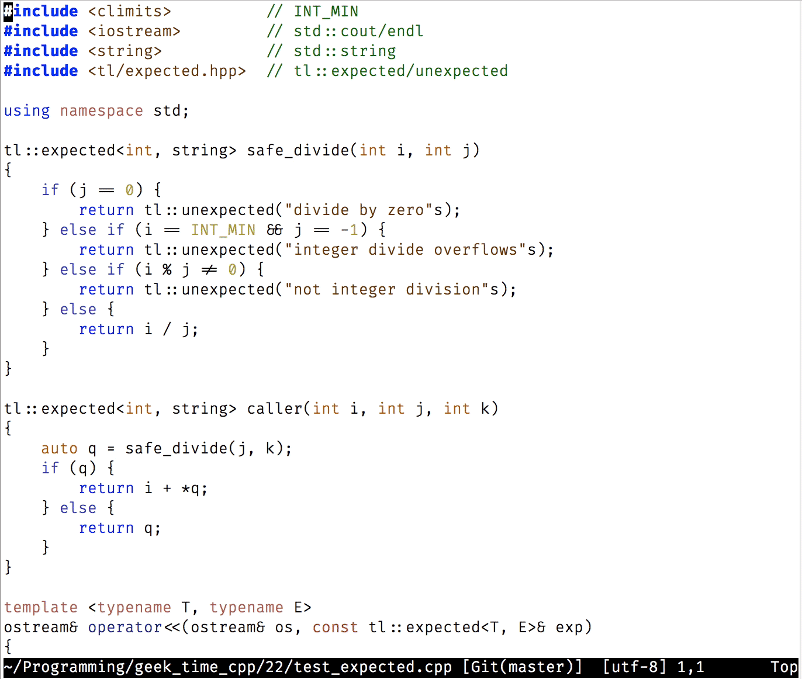
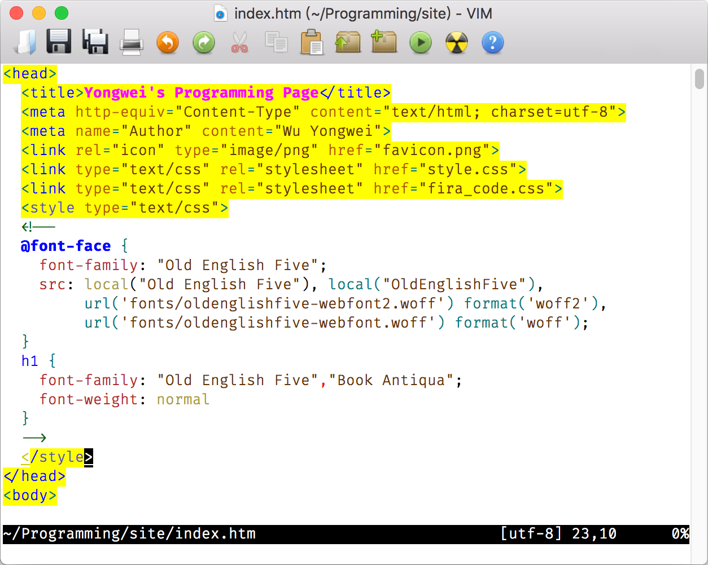

- 00 导读 池建强：Vim 就是四个字“唯快不破”.md.html
- 00 开篇词 我们为什么要学 Vim？.md.html
- 01 各平台下的 Vim 安装方法：上路前准备好你的宝马.md.html
- 02 基本概念和基础命令：应对简单的编辑任务.md.html
- 03 更多常用命令：应对稍复杂的编辑任务.md.html
- 04 初步定制：让你的 Vim 更顺手.md.html
- 05 多文件打开与缓冲区：复制粘贴的正确姿势.md.html
- 06 窗口和标签页：修改、对比多个文件的正确姿势.md.html
- 07 正则表达式：实现文件内容的搜索和替换.md.html
- 08 基本编程支持：规避、解决编程时的常见问题.md.html
- 09 七大常用技巧：让编辑效率再上一个台阶.md.html
- 10 代码重构实验：在实战中提高编辑熟练度.md.html
- 11 文本的细节：关于字符、编码、行你所需要知道的一切.md.html
- 12 语法加亮和配色方案：颜即正义.md.html
- 13 YouCompleteMe：Vim 里的自动完成.md.html
- 14 Vim 脚本简介：开始你的深度定制.md.html
- 15 插件荟萃：不可或缺的插件.md.html
- 16 终端和 GDB 支持：不离开 Vim 完成开发任务.md.html
- 拓展1 纯文本编辑：使用 Vim 书写中英文文档.md.html
- 拓展2 C 程序员的 Vim 工作环境：C 代码的搜索、提示和自动完成.md.html
- 拓展3 Python 程序员的 Vim 工作环境：完整的 Python 开发环境.md.html
- 拓展4 插件样例分析：自己动手改进插件.md.html
- 拓展5 其他插件和技巧：吴咏炜的箱底私藏.md.html
- 结束语 Vim 森林探秘，一切才刚刚开始.md.html
- 捐赠
07 正则表达式：实现文件内容的搜索和替换
你好，我是吴咏炜。
上面两讲里我们讨论了如何找到你想要查看/编辑的文件，及如何处理多个文件。今天我们来看一下如何在一个文件中搜索和替换内容，其核心主题就是正则表达式。
正则表达式搜索
通过 Vim 教程，你已经学到了搜索命令 / 和替换命令 :s 的基本用法。教程里没有提到的是，你输入的待查找的内容是被 Vim 当成正则表达式来看待的。正则表达式的学习资料很多（极客时间上就有专门的课程），完整学习也相当复杂，我们就不从头学习了。下面我们会简单讨论的，是 Vim 里的正则表达式，重点是它和其他常用正则表达式（正则表达式还是有很多种不同的风格的）的区别之处。如果你之前对正则表达式完全没有了解，建议你这儿暂停一下，先在网上搜索一下关于正则表达式的资料，了解它的基本概念和用法，然后继续阅读。
在一个搜索表达式里，或者称为模式（pattern；注意不要和 Vim 的 mode 混淆）里，.、*、^、$、~、[]、\ 是有特殊含义的字符：
.可以匹配除换行符外的任何字符：如a.可以匹配“aa”、“ab”、“ac”等，但不能匹配“a”、“b”或“ba”。如果需要匹配换行符（跨行匹配）的话，则需要使用_.。*表示之前的匹配原（最普通的情况为单个字符）重复零次或多次：如aa*可以匹配“a”、“aa”或“aaa”，a.*可以匹配“a”、“aa”、“abc”等等，但两者均不能匹配“b”。^匹配一行的开头，如果出现在模式的开头的话；在其他位置代表字符本身。$匹配一行的结尾，如果出现在模式的结尾的话；在其他位置代表字符本身。~匹配上一次替换的字符串，即如果上一次你把“foo”替换成了“bar”，那~就匹配“bar”。[…]匹配方括号内的任一字符；方括号内如果第一个字符是^，表示对结果取反；除开头之外的-表示范围：如[A-Za-z]表示任意一个拉丁字母，[^-+*/]表示除了“+”、“-”、“*”、“/”外的任意字符。\的含义取决于下一个字符，在大部分的情况下，包括上面的这几个（.、*、\、^、$、~、[和]），代表后面这个字符本身；在跟某些字符时则有特殊含义（后面我们会讨论最重要的那些）。
除此之外的字符都是普通字符，没有特殊含义。不过，需要注意的是，如果使用 / 开始一个搜索命令，或者在替换命令（:s）中使用 / 作为模式的分隔符，那模式中的 / 必须写作 \/ 才行，否则 Vim 看到 / 就会以为模式结束了，导致错误发生。
为了避免写模式的困扰，如果模式中使用“/”作为路径的分隔符，在替换命令中可以使用其他模式中没有的符号作为分隔符。比如，想把“/image/”全部替换成“/images/”的话，不要用 :%s/\/image\//\/images\//g，而应该用类似于 :%s!/image/!/images/!g 的写法。这只能适用于替换命令，而在使用 / 命令搜索时我们就没什么好办法了，只能把模式里的 / 写作 \/。不过我们也可以取巧一下，用 ? 向上、也就是反向搜索，只要记得 n、N 反过来用找下一个就行。
通过 \ 开始的特殊表达式有不少，如果你需要完整了解的话，可以去看看参考文档（:help pattern-overview）。我们下面先学习一下最基本的 6 个特殊模式项：
\?表示之前的匹配原重复零次或一次：如aa\?可以匹配“a”、“aa”，但不能完整匹配“aaa”（可以匹配其前两个字符、后两个或最后一个字符）。\+表示之前的匹配原重复一次或多次：如aa\+可以匹配“aa”、“aaa”，但不能匹配“a”或“b”。\{n,m}表示之前的匹配原重复 n 到 m 遍之间，两个数字可以省略部分或全部：如a\{3}（可读作：3 个“a”）可以匹配“aaa” ，a\{,3}（可读作：最多 3 个“a”）可以匹配“”、“a”、“aa”和“aaa”；两个数字都省略时等价于*，也就是之前的匹配原可以重复零次或多次。\(和\)括起一个模式，将其组成为单个匹配原：如\(foo\)\?可以表示单词“foo”出现零次或一次。\(和\)还有一个附加作用，是捕获匹配的内容，按\(出现的先后顺序，可以用\1、\2到\9来引用。如果你不需要捕获匹配内容的话，用\%(和\)的性能更高。\&是分支内多个邻接（concat）的分隔符，概念上可以和与操作相比，表示每一项都需要匹配成功，然后取最后一项的结果返回：如.*foo.*\&.*bar.*匹配同时出现了“foo”和“bar”的完整行。相对来讲，\&没那么常用。\|是多个分支的分隔符，概念上可以和或操作相比，表示任意一项匹配成功即可：如foo\|bar可匹配“foo”或“bar”两单词之一。
接下来，我再和你分享 13 个特殊模式项。虽然它们相对来说不那么必需，但掌握它们可以大大地提高程序员的编辑效率。
\<匹配单词的开头\>匹配单词的结尾\s匹配空白字符<Space>和<Tab>\S匹配非空白字符\d匹配数字，相当于[0-9]\D匹配非数字，相当于[^0-9]\x匹配十六进制数字，相当于[0-9A-Fa-f]\X匹配非十六进制数字，相当于[^0-9A-Fa-f]\w匹配单词字符，相当于[0-9A-Za-z_]\W匹配非单词字符，相当于[^0-9A-Za-z_]\h匹配单词首字符，相当于[A-Za-z_]\H匹配非单词首字符，相当于[^A-Za-z_]\c忽略大小写进行匹配
以上我们讨论的实际上是 Vim 缺省设置下的正则表达式。通过选项（:help /magic），我们可以对哪些字符有特殊意义进行一定程度的调整。不过一般情况下，我认为修改这个选项只会造成混乱、增加心智负担，因此我也就不在这儿展开了。
搜索实例
抽象地讨论正则表达式恐怕你也不容易记住，我们还是拿一些具体的例子来看一下吧。
首先，如果我们要查找某个函数，该怎么做呢？简单，按下 /，然后输入函数名，回车，不就行了？
错。这种方式对函数名是部分匹配，你搜 begin 还会得到 begin1、_begin 之类的结果。正确的方法是，要在前后加上匹配单词头尾的标记，如，\<begin\>。
顺便说一句，被誉为最有用的 Vim 提示，是把光标移到希望搜索的关键字上，然后按下 * 键。Vim 会提取光标下的关键字，并自动添加 \< 和 \> 进行搜索。

如果我要搜索 begin 或 end 呢？我想，你应该已经知道了，是：/\<\(begin\|end\)\>。注意，写成 /\<begin\|end\> 可是不对的。（为什么？你想明白了吗？）
对于 HTML，你应该多多少少有些了解。如果我们想匹配一下 HTML 标签的话，该怎么做呢？
一个标签以 < 开始，以 > 结束。所以，最简单的模式应该是 <.\+>，对吗？
不对，这个写法忽略了一行里可能有多个标签的事实：对于“
title
”这样一个字符串，上面这个简单的模式会匹配整个字符串，而不是“”和“
”……
有一种解决方案是，排除不应该匹配的字符，把模式写成 <[^>]\+>：一对尖括号里有一个或多个不是“>”的字符。不过，这样的写法会让像 > 这样的结尾字符在模式中重复出现，因此这并不是最理想的写法。更好的方式是，使用最短匹配。
最长匹配和最短匹配
我们上面学到的 *、\?、\+ 和 \{} 都属于最长匹配（也叫贪婪匹配），也就是说，当模式既可以匹配一个较长的字符串，也可以匹配一个较短的字符串时，结果会是那个较长的字符串。
相应地，还有一种匹配叫做最短匹配，也就是在同时可以匹配较长的字符串和较短的字符串时，产生较短的匹配。在 Vim 里，最短匹配只有一种形式，{-n,m}，其意义和之前说的 {n,m} 基本相同，但结果是较短而非较长的字符串。
以上面的 HTML 标签匹配为例，使用最短匹配的话，我们可以把模式写成 <.\{-1,}>，要求在一对尖括号里至少有一个字符，但越短越好。
搜索加亮和取消
如果你一边学一边在试验的话，就会发现，Vim 缺省在你输入搜索模式时就会高亮跟你输入的模式匹配的文本。这对验证你输入的模式是否正确，以及进行进一步的编辑，都是非常方便和重要的。用惯了 Vim，就会把它当成是一件理所当然的事——直到你被迫使用其他编辑器时才发现，一边输入正则表达式一边就能看到匹配的结果，原来不是谁都这样做的啊……
但也有些时候，我们已经做完了搜索或替换，和模式匹配的文本内容仍然还高亮着，非常碍眼。有些人就会随便搜索一个不存在的字符串来取消加亮，但这显然不是一种高效的处理方式。事实上，Vim 有一个专门命令来取消搜索加亮，这个命令就是 :nohlsearch，不要高亮搜索。
鉴于这个命令使用的频度实在是太高了，我们需要给它专门分配一个快捷键。请在 vimrc 中加入：
" 停止搜索高亮的键映射
nnoremap <silent> <F2> :nohlsearch<CR>
inoremap <silent> <F2> <C-O>:nohlsearch<CR>
这样一来，在搜索或替换工作完成之后，只要按下 <F2> 就可以取消搜索加亮了。
好，关于正则表达式的搜索部分，我们暂时就先学到这里。下面我们来看一下替换。
正则表达式替换
你可能要说了：替换不就是找到跟模式匹配的字符串，然后把它换成另外一个字符串么，有什么复杂的？
事实上，还真是有些复杂情况的。你在看下面这些复杂的替换情况时，也可以同时考虑下自己有没有解决方案：
- 你可能要保留匹配中的某些字符，而替换另外一些字符
- 你可能要对匹配出的内容做大小写转换
- 你可能需要“计算”出替换结果
- 你可能需要决定一行里要替换单次还是多次，是自动替换还是要一一确认，等等
接下来，我们就分别看看这些复杂情况。
在这些情况里，最常用的显然就是在替换结果中保留匹配出的字符串了。前面说到 \(\) 除了将一个模式转变成匹配原外，还有一个作用是捕捉匹配的内容，按 \( 的出现顺序依次编号为 1 到 9，并可以在模式和替换字符串中用 \1 到 \9 来访问。如果要在替换字符串中完整使用匹配内容的话，则可以使用 \0 或 &（字符“&”也因此要在替换字符串中写成 \&）。
从搜索的角度，我们一般只关心匹配与否，而不关心匹配的大小。举个例子，如果我想找出作为函数调用的 begin，那我可以写成 \<begin(，虽然 ( 不是我想匹配的内容（函数名称）的一部分。但从替换的角度，我需要在替换时再处理一下多匹配的内容，也是件麻烦事；在非匹配的内容比较复杂或者会变化的时候，尤其会是这样。所以 Vim 里还有专门标识匹配开始和结束的匹配原，分别是 \zs 和 \ze。对于这个例子，搜索模式就应该是 \<begin\ze(。为了巩固前面学到的知识，你应该知道，这个模式也可以啰嗦地写成 \<begin(\&begin 或 \<begin(\&.....。
Vim 里还有一些大小写转换的特殊替换字符串。它们是：
\U把下面的字符变成大写，直到\E出现\u把下一个字符变成大写\L把下面的字符变成小写，直到\E出现\l把下一个字符变成小写\E结束大小写转换
Vim 还能用 \= 开始一个返回字符串的表达式，用来计算出一个替换结果。鉴于我们目前还没有讨论 Vim 脚本，这个我们就留到后面第 14 讲再说了。
跟常用的编程语言一样，Vim 的正则表达式中支持 \t、\r、\n 等特殊转义字符，但在替换表达式中，由于一些技术原因（:help NL-used-for-Nul），\n 插入的是空字符（NUL 或“\0”），而非在模式中出现时代表的 LF。如果要插入正常的行尾符 LF 的话，我们得使用 \r。这意味着如果想把一个回车变成两个的话，我们得别扭地写 :s/\n/\r\r/，略遗憾。如果有特殊需要得插入 CR 的话，就要更别扭地输入 \<C-V><CR> 才行。还好，我们基本不会在替换时遇到要插入 CR 的情况……
Vim 有很多用来控制替换的标志，你可以通过 :help s_flags 查看详细的介绍，我就不一一列举了。今天这一讲中，我们只会用到最常用的一个标志，g，代表可以在一行内进行多次替换；没有这个标志的话，Vim 在一行里只会对第一个成功的匹配进行替换。
替换实例
同样，我们还是通过例子来巩固一下对正则表达式替换的理解。
先来看一个简单的，删除行尾的“//”注释。我们可以用这个命令
:%s!\s*//.*$!!
把零到多个空白字符后面出现的“//”直到行尾全部删除。
如果要删除“/* */”注释，那就复杂多了。首先，匹配内容可以跨行；其次，有跟 HTML 标签类似的问题，需要使用最短匹配。我们需要使用的命令是：
:%s!/*_.\{-}*/!!g
由于一行里可以有多个“/* */”注释，我们在替换命令的尾部还加上了 g 标志，允许一行里进行多次替换。
假设我们目前的编码规范规定，所有的函数名应该首字母大写（简单起见，我们假设所有的类名已经是首字母大写了，因而构造函数自动符合该要求，不会发生冲突；但其他很多函数名称仍然是小写字母开头），我们能不能用 Vim 的替换命令做到呢？答案也是肯定的。所有需要的知识点我们都已经讲过了，我就直接公布答案了：
:%s/\<\(_*\)\([a-z]\w*\)\ze(/\1\u\2/g
这个命令比较长，请你慢慢体会一下，尝试去理解每一部分的意图。如果你有哪个点卡住了，可以留言给我，我再帮你详细分析一下。
内容小结
好了，今天的内容就讲到这里了。内容有点密集，我把要点再总结一下：
Vim 支持用 / 进行搜索和用 :s 进行替换，它们都用到了正则表达式。
在搜索的模式里，.、*、^、$、~、[]、\ 是有特殊含义的字符，你一定要记住它们的含义。在 \ 开始的特殊表达式中，最重要的是 \?、\+、\(\)、\| 和 \{n,m}。对于程序员来说，\<、\> 等匹配原对于提高编辑效率也非常重要。Vim 中的常用搜索命令 * 则会自动在搜索的关键字前后加上 \< 和 \>。
在替换时，我们需要特别记住 \1、\2 到 \9 可以用来引用前面用 \( 和 \) 括起来的内容，字符“&”出现在替换内容中需要使用反斜杠转义成 \&，否则代表完整的被匹配字符串。
正则表达式就可以算是一种独立的语言了，靠死记硬背是不行的。最后我还要建议你再把这一讲中的例子仔细看一下、尝试一下，多多练习是掌握正则表达式搜索和替换的必经之路。如果你日后遇到了这一讲没有覆盖的问题，可以再去查阅 Vim 的帮助文档 :help regexp。
本讲我们在配置文件中只更改了一处，对应的标签是 l7-unix 和 l7-windows。
课后练习
有两道练习题，请你在课后尝试一下。练习对于掌握正则表达式是非常重要的。
如果我要搜索“/* */”注释的话，搜索命令应该是什么样的？
例子里只说了首字母大写，但实际的编码规范是要求把 begin_search_nocase 这样的函数名称转变成 BeginSearchNocase。请用 Vim 的替换命令完成这一任务。提示：可能需要一条以上的替换命令。
我是吴咏炜，我们下一讲再见。
© 2019 - 2023 Liangliang Lee. Powered by gin and hexo-theme-book.